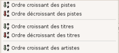
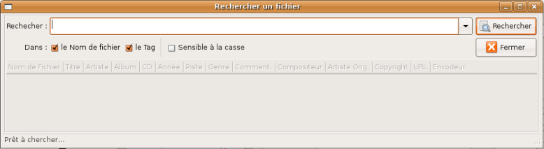
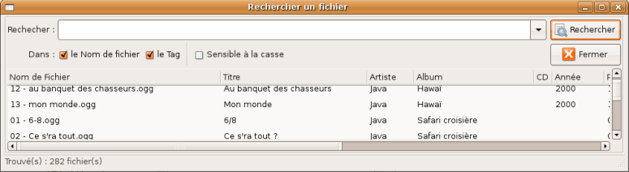
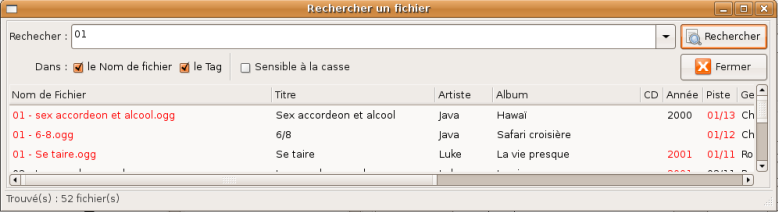

Guide de l'utilisateur du logiciel EasyTAG (version 1.99.11)
- chapitre 3 -
Table des matières.
Une collection de fichiers audio peut contenir un grand nombre de fichiers. L'étape avant tout traitement consiste alors à identifier rapidement les fichiers audio que l'on veut éditer/modifier. Pour cela, EasyTAG dispose de plusieurs outils que nous allons discuter dans ce chapitre.
EasyTAG permet de classer la liste des fichiers audio présents dans un répertoire particulier suivant certains critères :
- 
Champs d'information du tag du fichier : Le classement peut être réalisé par ordre croissant/décroissant de piste, de titre, d'artiste, d'album, d'année, de genre, de commentaire, de compositeur, d'artiste original, de copyright, d'URL ou de nom d'encodeur,
-
Caractéristiques du fichier lui-même : Le classement peut être réalisé par ordre croissant/décroissant de nom de fichier, de date de création, de type de fichier, de taille de fichier, de durée, de débit ou de fréquence.
Ces deux fonctions Classer liste par tag et Classer liste par propriétés sont accessibles depuis le menu «Fichier» (voir paragraphe 2.1) ou depuis un menu contextuel (voir paragraphe 2.6).
L'intérêt de ces différents classements est de modifier, en fonction de vos besoins, l'exploration de votre collection de fichiers audio. Par exemple :
- Pour trouver rapidement les morceaux les plus récents, il suffit de classer la liste par ordre décroissant des années. Les fichiers correspondant aux morceaux les plus récents s'afficheront alors tout en haut de la liste.
- Pour identifier facilement les fichiers dont le champ année n'est pas renseigné, il suffit de classer la liste par ordre croissant des années. En effet, ces fichiers apparaîtront alors en premier dans la liste.
- Pour différencier les fichiers mp3, ogg ou encore flac, il suffit d'effectuer un classement de la liste par type de fichiers.
De nombreuses autres utilisations de ces classements sont possibles. A vous de choisir le type de classement qui correspond le mieux à votre besoin.
Dans EasyTAG, vous pouvez aussi effectuer une recherche par mot clé sur la liste des fichiers audio présents dans un répertoire particulier. La fenêtre de recherche par mot clé est accessible en cliquant sur l'entrée Rechercher le(s) fichier(s) … du menu «Divers» (voir paragraphe 2.1) ou du menu contextuel consacré au traitement des fichiers (voir paragraphe 2.6).
La fenêtre «Rechercher un fichier» de base est présentée sur la figure suivante. On voit qu'elle permet d'afficher en une fois toutes les informations pertinentes des fichiers : le nom de fichier et quasiment la totalité des champs d'information du tag (titre, artiste, album, numéro de disque, année, piste, genre, commentaire, compositeur, artiste original, copyright, URL, nom d'encodeur).

Cette recherche peut être utilisée de la manière suivante :
- Visualisation globale : Il est possible de visualiser en une fois le nom et l'ensemble des champs d'information du tag de tous les fichiers présents dans un répertoire (voir figure suivante). Pour cela, il suffit de lancer la recherche en laissant le champ "Rechercher" vide.
Si le nombre de fichiers trouvés n'est pas trop important, vous pouvez, par défilement, visualiser l'ensemble de ces fichiers et sélectionner ceux sur lesquels effectuer un traitement ultérieur. De plus, dans cette liste, vous pouvez facilement identifier tous les fichiers dont un champ d'information particulier du tag (par exemple, champ année) n'est pas renseigné (cellule vide).

- Visualisation partielle : Si le nombre de fichiers présents dans le répertoire est important, il peut être utile de limiter l'affichage aux fichiers répondant à certains critères (par exemple, recherche d'un artiste particulier). Pour cela, il suffit de lancer la recherche en entrant un mot clé dans la zone de saisie ou bien encore en choisissant ce mot clé dans la liste déroulante des mots clé déja utilisés. Un exemple de cette recherche est présenté sur la figure suivante.
Pour faciliter la sélection des fichiers, tous les champs d'information qui contiennent la chaîne de caractères recherchée sont affichés en rouge.

- RETOUR A LA TABLE DES MATIERES -